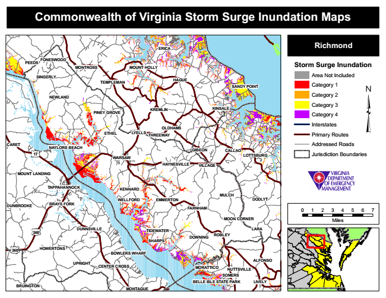

Commonwealth of Virginia Storm Surge Inundation Maps
ERICA
Richmond
PEEDS
FONESWOOD
MONTROSS
MOUNT HOLLY
Storm Surge Inundation
SINGERLY
TEMPLEMAN
HAGUE
Area Not Included
Category 1
Category 2
Category 3
Category 4
Interstates
ETHEL
Primary Routes
CARET
Addressed Roads
WARSAW
Jurisdiction Boundaries
MULCH
DUNBROOKE
0 1 2 3 4 5 6 7
MOON CORNER
Miles
MORATTICO
SOMERS
BRUINGTON
MONTAGUE
SANDY POINT
NEWLAND
PINEY GROVE
KREMLIN
KINSALE
OLDHAMS LYELLS
THREEWAY
17
NAYLORS BEACH
GIBEON
CALLAO
LOTTSBURG
HAYNESVILLE
VILLAGE
MOUNT LANDING
TAPPAHANNOCK
KENNARD
WELLFORD
EMMERTON
DODLYT BRAYS FORK
FARNHAM
360
DUNNSVILLE
TIDEWATER
LARA
DOWNING
360
HOWERTONS
BOWLERS WHARF
UPRIGHT
CENTER CROSS
ROBLEY SHARPS
ALFONSO
NUTTSVILLE
BELLE ISLE STATE PARK
LIVELY